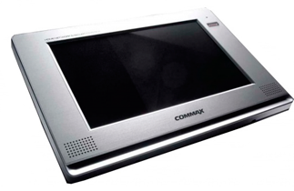

Гоголь (h1)
Николай Васильевич (h2)
Цветной видеодомофон Commax CDV-1020AQ без трубки, оснащён современным TFT LCD экраном 26 сантиметров по диагонали ( 10.2 дюйма), на котором происходит управление домофоном - система Touch Screen (без кнопок). К монитору CDV-1020AQ подключается до 4-х вызывных панелей или камер наблюдения, в различных конфигурациях, но при этом все устройства должны быть одного формата Pal или NTCS. CDV-1020AQ отличается от всей линейки Commax встроенным квадратором, который позволяет получать изображение с 4 точек обзора одновременно.
При звонке на монитор всегда выводится изображение с 4-х видеокамер, но при необходимости возможно увеличение картинки с камеры, путем нажатия на кнопку.Встроенная энергонезависимая память на 128 кадров (при отключение от источника питания фото сохраняются), фотографирует посетителя в момент нажатия на кнопку в вызывной панели. Фото фиксируется с датой и временем вызова, одновременно с четырех камер. Монитор может выполнять функции стационарного городского телефона (является основной базой для DECT трубок Commax). Возможно подключить до 4 беспроводных DECT трубок Commax CDT-180 (приобретается отдельно) с их помощью можно общаться "трубка-трубка", управлять электрозамками, и конечно использовать как обычные DECT телефоны.
Подключение к многоквартирному ауди домофону с помощью блока сопряжения.
Fine View Color LCD технология обеспечивает лучшее качество картинки. Рассчитан на установку 2 вызывных панелей и 2 камер наблюдения, дополнительной трубки интеркома и параллельного подключения второго монитора commax. Максимальная конфигурация подключения - две вызывные панели, две камеры, два монитора и 4 беспоровдных DECT аудиотрубок.
Параметры товара (h3)
Название параметра (h4) |
Значение |
Значение |
| Тип экрана |
Fine View Color LCD |
Fine View Color LCD |
| Система цветности |
Мультисистемный |
Мультисистемный |
| Размер экрана |
10,2 дюйма (25,9см) |
10,2 дюйма (25,9см) |

Цветной видеодомофон Commax CDV-1020AQ без трубки, оснащён современным TFT LCD экраном 26 сантиметров по диагонали ( 10.2 дюйма), на котором происходит управление домофоном - система Touch Screen (без кнопок). К монитору CDV-1020AQ подключается до 4-х вызывных панелей или камер наблюдения, в различных конфигурациях, но при этом все устройства должны быть одного формата Pal или NTCS. CDV-1020AQ отличается от всей линейки Commax встроенным квадратором, который позволяет получать изображение с 4 точек обзора одновременно.
При звонке на монитор всегда выводится изображение с 4-х видеокамер, но при необходимости возможно увеличение картинки с камеры, путем нажатия на кнопку.Встроенная энергонезависимая память на 128 кадров (при отключение от источника питания фото сохраняются), фотографирует посетителя в момент нажатия на кнопку в вызывной панели.
В 21 веке у людей не малым спросом пользуются услуги по монтажу видеодомофонов. Преимущества от установки видеодомофона в квартире - на лицо. Вы всегда поймете, является ли человек, стоящий за дверью посторонним, или нет.
Устанавливая видеодомофон, вы сможете защитить себя. Не каждый человек сможет платить ежемесячно немалые суммы на установку дорогостоящей сигнализации. К числу основных достоинств видеодомофона стоит отнести следующие:
ведение переговоров с посетителем, стоящим за дверью с наружной стороны;
просмотр пространства перед дверью;
в ночное время, многие современные устройства имеют инфракрасную подсветку, которая позволяет увидеть посетителя в условиях плохой видимости.
Домашний видеодомофон нужен, не только с точки зрения Вашей безопасности, но и удобства. В комнате, на кухне или в кабинете можно установить домофон,Это позволят не отрываясь от занятий принять решение – открыть дверь или не открывать, и брать ли вообще трубку.
Модели видеодомофонов, самые разнообразные и модификации домашних видеодомофонов, среди которых не просто удобные и функциональные, но и стильные варианты, которые впишутся в Ваш интерьер.